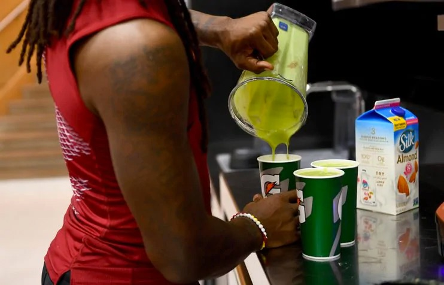

"Jake Sankal, an assistant strength and conditioning coach for the Washington Redskins who doubles as the team’s director of sports nutrition, an increasingly prevalent position in the NFL, works with chef Connor McGuire to pick out menu options for the week.""
August 28, The Washington Post
Through the weight room and down a flight of stairs, a cohort of hungry football players trudged into the Redskins Park cafeteria on a Tuesday in late August to the sound of clinking pots and sizzling pans.
Fresh off a morning walk-through, and just 19 days before their season opener in Arizona, they entered the room filled with 15 large roundtables and 10 wall-mounted televisions. To their left was one of their favorites: a smoothie bar stocked with single-serving bags of frozen fruits, milk options and kale. To the right was a toppings-filled salad bar, next to rows of six different lunch entree options and trays of pizza with thin Greek yogurt crusts.
Jake Sankal, an assistant strength and conditioning coach for the Washington Redskins who doubles as the team’s director of sports nutrition, an increasingly prevalent position in the NFL, works with chef Connor McGuire to pick out menu options for the week. It’s just one of Sankal’s tasks when it comes to completing his main objective: feeding an entire NFL team while keeping the players in top shape before and throughout the season.
“What we try to do more than just being the food police is provide them healthy options,” Sankal said. “We focus a ton on quality food here. That’s really the biggest thing we do. And then we try to educate them.”
Sankal’s job consists of constantly thinking about hydration levels, snacks, proteins, carbohydrates, body composition and meal prep — all of which are part of the dietitian revolution sweeping college and professional football.
Snacks and drink options are also important, and in Sankal’s office in the weight room of Redskins Park, he has boxes of nutrition bars in addition to a new kombucha and nitro cold brew coffee machine. Players also have access to a portable cart filled with nutrition bars, yogurt cups, protein shakes, chocolate milk and fruit, and a dispenser in the cafeteria of dark chocolate or yogurt-covered almonds has been a favorite during the preseason. Sankal also delivers various drinks — such as smoothies — to players’ lockers before practice, all individualized based on player needs.
The nutrition check-ins between Sankal and the players is a daily task. From stretching players out on the field, to serving them an extra scoop of quinoa in the kitchen, to running across the practice field to give players their specific water bottle, Sankal is constantly keeping up with players and their gains — or losses. When asked if he worried athletes might negate the meticulously manicured diet plan with a night of partying, Sankal grinned.
“We hope they don’t do it very much,” he said, “but the reality of it is that there is some of that. That’s always going to happen . . . really at any level of athletes. So you just do your best . . . to try to make sure they’re always prepared every day.”
Source: https://www.washingtonpost.com/sports/redskins/875-pounds-of-fish-54-dozen-eggs-and-a-kombucha-machine-a-week-feeding-an-nfl-team/2018/08/28/4e5e0d36-aada-11e8-a8d7-0f63ab8b1370_story.html?utm_term=.c9b422bdcd75
Published by Google Drive–Report Abuse–Updated automatically every 5 minutes